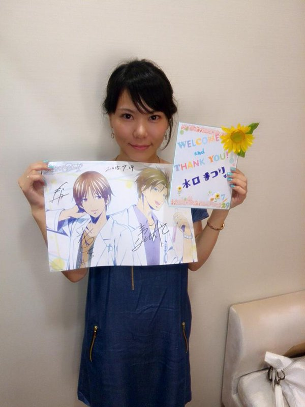

Matsuri Mizuguchi is a Japanese voice actress. She is affiliated with Yellowtail.
- Gender: Female
- Birthday: October 28, 1986
- Hometown: Yamagata, Japan
- Hobbies: Shopping and Walking

| |
Matsuri Mizuguchi is a Japanese voice actress. She is affiliated with Yellowtail.
|
 |
|---|
 |
Rex Owen |
|
Rex Owen is a friend of Max. He is good-hearted boy, but can be short-tempered. Rex likes to lay the violin. |